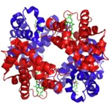

| Chapter 9: Reactions systems – knowledge statements and learning goals |
In the real world, simple chemical reaction
systems are rare. While chemistry lab experiments typically involve
mixing pure chemicals together in well defined amounts under tightly
controlled conditions, in the wild, things are messier. There are
usually a number of chemical species present, and that can lead to
competing reactions. While laboratory systems are effectively “closed”,
and the results are analyzed only after the reaction has reached
equilibrium, real systems are usually open and rarely reach equilibrium.
This is particularly true for living systems - which tend to be dead
if they reach equilibrium (or become enclosed). In fact most real
systems are subject to frequent short and long term perturbations.
For example, as we saw in the last chapter, perturbations to a system
(adding or taking away a product or a reactant) lead to compensatory
changes - the system responds, as described by Le Chatelier’s
principle. This essentially simple behavior can, in the context of
more complex system, produce quite dramatic behaviors. Life is an
example of such a system, a system that has (in its various forms)
survived uninterrupted for over 3.5 x 109 years. |
In this chapter we will examine a range of complex systems. We will consider how living systems manage to keep the concentration of important chemical species at a reasonable level (for example by buffering the pH), how they manage to use differences in concentrations of chemical species to drive cellular processes (like thought), and how reactions that release energy (by forming more stable compounds) can be coupled to reactions that require energy to occur. Systems composed of one reaction We begin by considering a few of the reactions that are important to us and that can either be moved backwards or forwards depending on conditions. Molecular oxygen (O2) is a vital component in a number of reactions in our bodies, particularly energy capture from food, through an evolutionarily ancient process known as aerobic respiration. O2 must be transported to every cell so that it can participate in cellular reactions. O2 diffuses into the bloodstream in the lungs, but O2 is not very soluble in water (the main component of blood). If we relied on O2‘s solubility in water to transport it around the body we would be in trouble. Instead O2 reacts with (we usually say binds to, but this is definitely a chemical reaction) a protein called hemoglobin. The structure of hemoglobin is complex; it is composed of four polypeptide subunits, each polypeptide is associated with a heme group. The heme group contains an iron ion (Fe2+) complexed to four nitrogenous bases? linked into a ring (called a porphyrin) to form a more or less planar arrangement. A similar molecule, known as chlorophyll, differs most dramatically from heme in that the iron ion is replaced by magnesium (see below). Its function is not to bind O2 (or CO2), but rather to absorb visible light and release an energetic electron as part of the photosynthetic process.
This way of depicting the reaction is an oversimplification. As we said initially, each hemoglobin molecule contains four polypeptides each of which is associated with a heme group (green in the figure), so there are four heme groups in a single hemoglobin molecule. Each heme group can bind one O2 molecule. As an O2molecule binds to the heme iron, there are structural and electronic changes that take place within the protein as a whole - this leads to a process known as cooperativity - the four heme groups do not act independently.
As you might suspect, this process is reversible. Imagine a hemoglobin protein with four bound O2s. When an O2 is released from the hemoglobin molecule, the affinity between the remaining O2s and the heme groups is reduced, making it more likely that more of the bound O2s will be released. This is an equilibrium reaction, and we can apply Le Chatelier’s principle to it. Where O2 is present in high abundance (in the lungs) the reaction shifts to the right (binding and increasing affinity for O2), and where O2 is present at low levels, the reaction shifts to the left, releasing O2 and reduced affinity for O2.) The end result is a molecule (hemoglobin) that has high capacity for binding O2 where O2 is present at high concentrations and readily releases O2 where O2 is present at low concentrations. In the blood [hemoglobin] ranges between 135-170 g/L, approximately 2 mM, and since there are 4 O2 binding sites per hemoglobin, this leads to about ~8 mM concentration of O2 - this compares to O22s’s solubility in water which is ~ 8mg/L at 37ºC, or 250 μM). The reaction can be written like this O2 in the air ↔ O2 in the blood (liquid) + hemoglobin ↔ hemoglobin-O2 + O2 in the blood ↔ hemoglobin-2O2 + O2 in the blood ↔ hemoglobin-3O2 + O2 in the blood ↔ hemoglobin-4O2 |
|  | When the hemoglobin reaches areas of the body where [O2] is low, the oxygen dissociates from the hemoglobin into the blood. The dissolved O2 is then removed from the blood by aerobic (that is, oxygen-utilizing) respiration. C6H12O6 + 6O2 ↔ 6CO2 + 6H2O Again, the combination of Le Chatelier’s principle and the cooperativity of the O2 + hemoglobin reaction now leads to the complete dissociation of the hemoglobin-4O2 complex, releasing O2. The products of aerobic respiration - which is essentially a combustion reaction - are carbon dioxide and water. |
| Clearly the water can be carried away in any cellular fluid, but the carbon dioxide must be removed in a variety of ways: a small part is removed by reacting with the hemoglobin (not at the Fe center), some is dissolved in the blood, and some takes part in the buffering system present in the blood. | 9.1 Reaction systems 9.2 Buffered systems 9.3 Activation energy |
Question to answer:
Questions to ponder:
|
| 28-Jun-2012 |